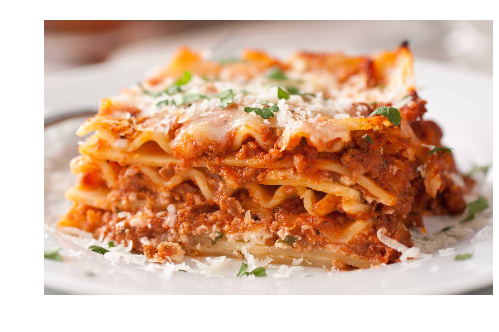

LASAGNA

Lasagna, a classic Italian dish, is an irresistible culinary delight. Layer upon layer of tender pasta sheets,
luscious tomato sauce, and a generous amount of creamy cheese create a symphony of flavors that captivate the
taste buds. With each bite, the savory blend of herbs and spices infuses the palate, while the melted cheese
forms a golden,gooey crust that adds a delightful textural contrast. The sheer decadence and heartiness of
lasagna make it an immensely satisfying and undeniably yummy dish for any occasion.
Recipe
Ingredients
- Lasagna noodles
- Ground meat (beef, pork, turkey, or chicken)
- Tomato sauce
- Mozzarella cheese
- Parmesan cheese
- Ricotta cheese
- Eggs
- Fresh herbs (basil, oregano, parsley)
- Garlic
- Onions
- Olive oil
- Salt and pepper
- Optional vegetables (zucchini, spinach, mushrooms, etc.)
Instructions
- Cook the lasagna noodles according to the package instructions. Drain and set aside.
- In a large skillet, heat some olive oil over medium heat. Add the onions and garlic, and sauté until they
become translucent.
- Add the ground meat to the skillet and cook until browned. Drain any excess fat.
- Pour in the tomato sauce and season with salt, pepper, and your preferred herbs. Simmer the meat sauce for
about 15 minutes.
- In a separate bowl, mix together the ricotta cheese, eggs, and some chopped fresh herbs.
- Preheat the oven to the temperature specified on the lasagna noodle package instructions.
- Spread a thin layer of the meat sauce in the bottom of a greased baking dish.
- Place a layer of cooked lasagna noodles over the meat sauce.
- Spread a layer of the ricotta cheese mixture over the noodles.
- Add another layer of meat sauce, followed by a layer of mozzarella and Parmesan cheese.
- Repeat the layering process with the remaining ingredients until the baking dish is filled, ending with a
layer of cheese on top.
- Cover the dish with foil and bake in the preheated oven for about 25-30 minutes.
- Remove the foil and continue baking for an additional 10-15 minutes, or until the cheese is golden and
bubbly.
- Allow the lasagna to cool for a few minutes before serving. Cut into portions and enjoy!
Back to Main